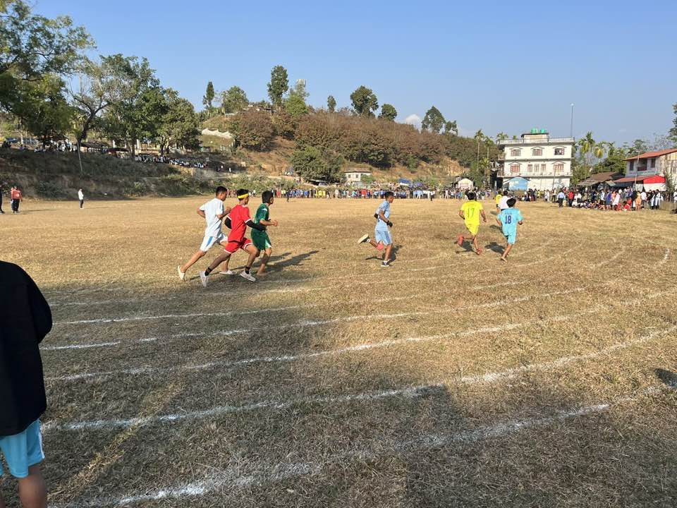
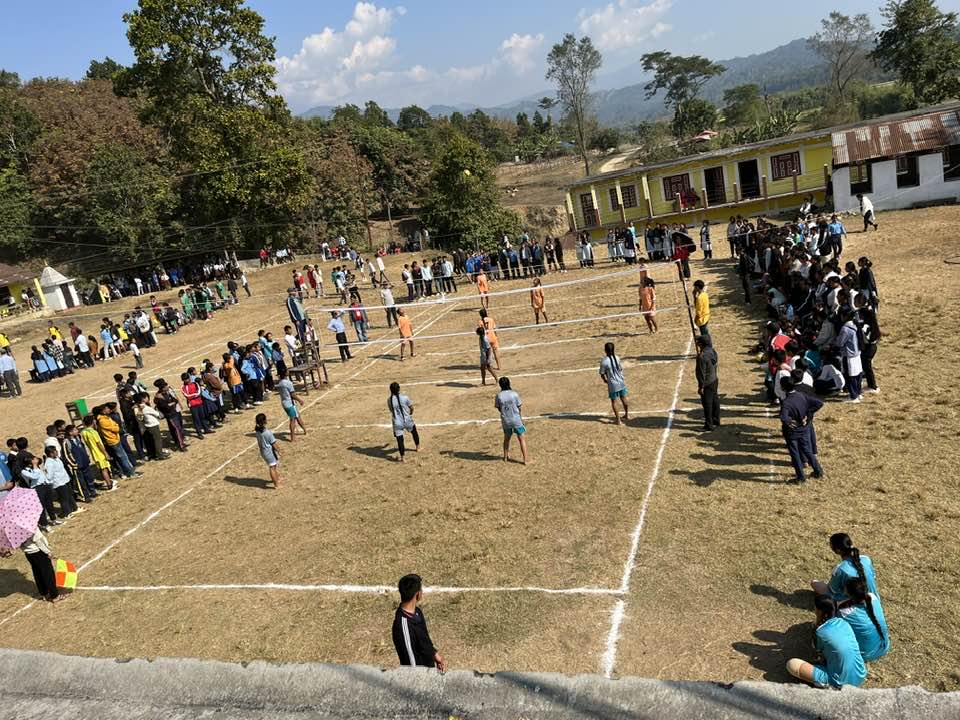
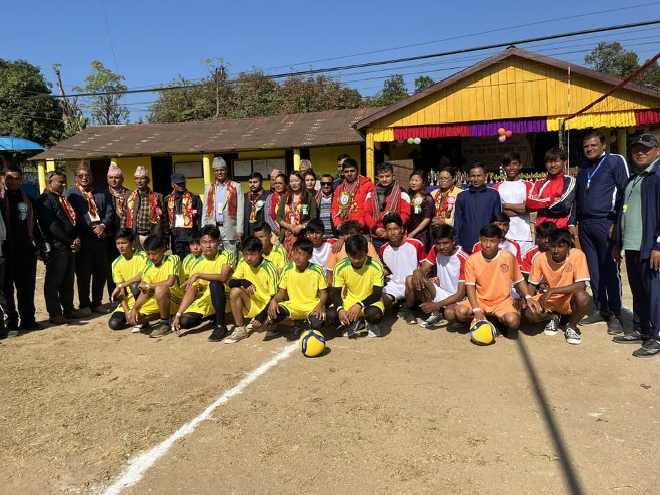

Active & Creative Students
We encourage students to discover talents through sports, clubs, and creative events.
- Games and physical training for health.
- Clubs and leadership activities.
- Cultural programs and celebrations.
Facilities
Energetic co-curricular programs that build teamwork, confidence, and leadership.

We encourage students to discover talents through sports, clubs, and creative events.
Student Energy
Training and competitions that build teamwork and stamina.
Creative platforms for leadership, music, and cultural events.
Opportunities to lead programs and serve the community.
Activities



We build confident students through sports, clubs, and leadership programs.
Co curricular activities and sports are an important part of school life. They help students develop physical fitness, teamwork, and discipline. At Kankai Secondary School, we encourage every student to take part in games, sports, and ECA programs. Participation builds confidence and a strong sense of belonging.
Our sports activities include regular practice sessions and friendly competitions. Students learn the value of hard work, fair play, and respect for opponents. Coaches and teachers guide students to improve skills and stay safe. These experiences build character as well as strength.
ECA programs provide opportunities in arts, music, speech, debate, and community service. Students explore their interests and discover new talents. These activities help them communicate better and think creatively. They also teach leadership and responsibility.
Special events, celebrations, and inter school competitions add energy to the school year. Students learn to represent the school with pride and good behavior. Participation motivates students to set goals and practice regularly. It also strengthens friendships and school spirit.
We believe that a healthy body and an active mind support academic success. Sports and ECA are integrated with our educational goals to develop balanced students. With guidance and encouragement, every child can find a place to grow. This is the spirit of Kankai Secondary School.